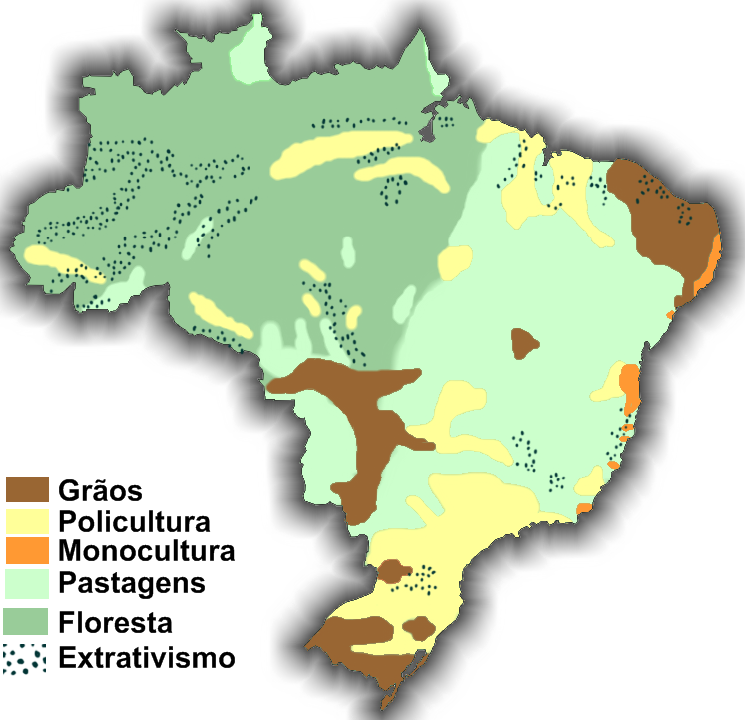

A agricultura brasileira é uma das principais atividades econômicas desenvolvidas no país. A sua evolução ocorreu por meio de diferentes ciclos produtivos, desde a cana-de-açúcar até o café e o algodão, sendo praticada com o auxílio das técnicas tradicionais.
O avanço da Revolução Verde promoveu uma transformação produtiva no Brasil a partir da segunda metade do século XX, quando se deu a modernização da agricultura brasileira. Durante esse processo, novas modalidades de agricultura ganharam espaço e a fronteira agrícola se expandiu para áreas como o Centro-Oeste e o Nordeste, no Matopiba, duas importantes regiões produtivas atualmente.
O Brasil se consolidou como um dos maiores produtores e exportadores agrícolas do mundo. A soja se destaca como principal lavoura da agricultura brasileira, além de ser o carro-chefe das exportações desse setor. Além da soja, o Brasil é um grande produtor de milho em grão, café, cana-de-açúcar e algodão.